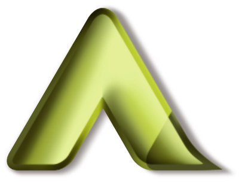

Finds the real problem
Asks the uncomfortable "why" until the cause shows up — so the fix lands on the right thing the first time.
Strategy · structuring · leadership
Hello, I'm
EMIL.
▸ Business Development & Structuring Specialist
A senior strategic partner to the Managing Director, operating at the intersection of AI, data and business growth — driving transformation across technology, operations and strategy.
01 About me
An Electronics & Communication engineer who chose business — and kept the engineer's habit of taking things apart to see why they don't work.
I'm happiest in the space between the boardroom and the build: listening to what leadership actually needs, finding the bottleneck nobody has named yet, and then closing the gap myself — with AI, a cleaner process, the right hire or a sharper campaign.
Curiosity is the operating system. If a task is repeated twice, I'll ask whether a tool should do it; if a decision is made on gut feel, I'll ask what the data says.
“I believe great ideas come from bold conversations and maybe… a little caffeine.”
02 Why hire me
I look for what is slowing a business down, then build the fix — with AI, data, marketing, people or process. Here is what you get, and where I've already done it.
Asks the uncomfortable "why" until the cause shows up — so the fix lands on the right thing the first time.
Strategy · structuring · leadership
Moves a team from "we should try AI" to tools people use every day — without waiting for a dev team.
AI integration · automation
Replaces gut feel with a clear view: the numbers that matter, in front of the person who decides.
Data strategy · BI
Connects outreach, content and campaigns into one engine that brings in conversations, not just clicks.
Sales · digital marketing · SEO
Hires for the gap, onboards properly, and puts the processes in place so the team keeps working when it grows.
HR · talent · process
Comfortable as a leader's right hand — discreet, organised, and able to act on their behalf.
Executive support · confidentiality
How I work
4 steps · repeat
Dig into the workflow and the data to locate the real bottleneck.
Structure the problem and the options with leadership.
Ship the fix — an AI tool, a process, a campaign or a hire.
Track what changed, refine it, and make it repeatable.
03 AI Lab
Most people use AI to write emails. I use AI agents to ship working things — apps, dashboards, content and campaigns — in days, not quarters. Each one starts with a single prompt.
> turn this business idea into a working demo app
I take a business need, research it, and build a working web application with AI agents — screens, data, access control and all — so leadership can see and test the idea instead of reading about it.
> show me the numbers live, not in a monthly report
Live dashboards and internal tools that pull data together, keep it current and put the right view in front of the right person.
> make our product range ready for social media
Product imagery, catalogues, posts and short videos produced with AI — and scheduled to publish automatically.
> research this market and draft the first outreach
Market research, briefings, proposals and outreach drafted with AI, then followed up and tracked so nothing slips.
> plan the campaign, set the audience, watch the spend
Audiences, budgets and campaign structure set up and monitored with AI connected directly to the ad platform.
> here's a reel I like — make my portfolio from it
Designed and built with AI from a reference video: the animations, the terminal, the pipeline and the résumé you can download.
My AI toolkit
04 Current role
Where the work happens today.

Present · Jan 2026 – Present · 11 mos
AI Integration, Data Strategy | EA to MD
A Daga Steel and Industrial Corporation · Elecmatics · A Daga Group
A senior strategic partner to the Managing Director, operating at the intersection of AI, data and business growth. The role goes far beyond traditional executive support — driving transformation across technology, operations and strategy at the highest level.
AI-first
BI · Systems
MD's office
Web · Apps
Outreach
HR · Hiring
05 Experience
From internships in 2020 to the Managing Director's office.
Conor Australia · Full-time
As an Executive Assistant to the Founder, I worked closely with the founder to support strategic, operational and day-to-day business functions. The role went beyond traditional administrative responsibilities, involving active participation in decision-making, cross-functional coordination and business growth initiatives.
CCS Technologies Pvt. Ltd · Full-time
Full-time design and communication role at a Kochi technology company — turning technical work into material that clients and teams could understand and act on.
AdAid · Part-time
Part-time writing role alongside my engineering degree — where I learned to write for an audience, a brief and a deadline.
Group of Technology Companies (GTech) · Full-time
Member of μLearn, the learning community run by GTech, the association of Kerala's technology companies.
Codelattice · Internship
Software development internship in Kozhikode — my first hands-on experience of building with code.
Innovators and You · Internship
Business development and marketing internship — my first experience of finding customers and telling a product's story.
Muskurahat Foundation · Internship
Support internship with a non-profit foundation — working for social impact while still a student.
My-cart.in
A start-up e-commerce website that lets you buy and sell tangible goods, digital products or services online — co-founded while studying engineering.
06 Capabilities
How the work flows — and the skills behind it.
07 Foundations
Education
College of Engineering, Munnar · Jan 2018 – Jan 2022
NSS Volunteer Secretary · IEEE SB CEM Student Member (2018–2019) · IEDC Student Member · IEEE SB CEM PELS Vice Chair (2019)
St. George Higher Secondary School, Kattappana · 2016 – 2018
NCC · School Mock Parliament · Math game participant
Certifications
Great Learning · Issued Feb 2023
HubSpot Academy · Issued Feb 2023
Credential ID 5b5bb54ad0874a40afe5e4ce2c0a9a41
Innovators And You · Oct 2020
Volunteering (6)
08 Get in touch
Hiring for business development, AI integration, data strategy, HR, digital marketing or an executive role? I'm open to opportunities — let's talk.
emil@portfolio:~$ connect --email --phone --linkedin